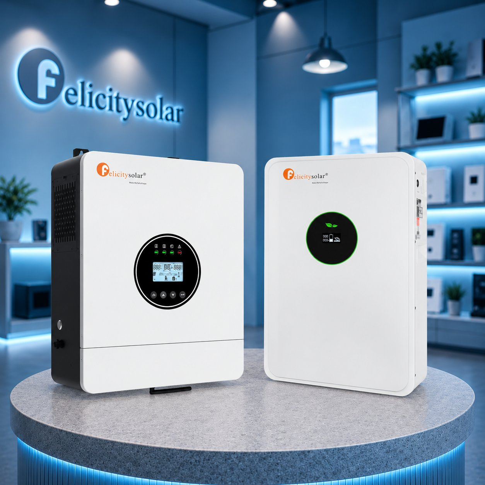

На екрані ще є заряд, а система вже вимкнулася: чому так буває?
Чому система вимикається, коли на дисплеї ще є заряд: неточні відсотки, захист BMS, просідання напруги під навантаженням, налаштування інвертора і як знайти причину.
Коли на дисплеї інвертора залишилося 25% заряду, здається, що електрики має вистачити ще на деякий час. Але раптом усе вимикається, хоча до нуля ще далеко. Найдивніше, що після повторного запуску екран знову показує залишок заряду, ніби акумулятор ще не розрядився.
Насправді така ситуація не завжди означає несправність обладнання. Іноді система неправильно оцінює доступний запас енергії, в інших випадках спрацьовує захист або обмеження інвертора. Щоб зрозуміти, що саме сталося, варто спочатку розібратися, звідки беруться відсотки на екрані.
Чому відсоток заряду не завжди точний
Ми звикли, що відсоток заряду на екрані показує, скільки ще може працювати пристрій. Але з акумуляторами для резервного живлення все трохи складніше. Цифра на дисплеї не завжди точно відповідає реальному запасу енергії.
Річ у тому, що деякі інвертори оцінюють рівень заряду за напругою акумулятора. У LiFePO4-батарей вона протягом більшої частини розряду залишається майже незмінною. Тому система може показувати достатній залишок заряду, хоча акумулятор уже наближається до розрядження.
Точнішу інформацію зазвичай надає BMS, яка контролює стан батареї та допомагає визначати залишок заряду. Проте й тут можливі похибки, особливо якщо акумулятор тривалий час не заряджався повністю.
Через це на екрані може залишатися 25%, хоча фактично доступної енергії вже значно менше. Така ситуація не обов'язково свідчить про зношення акумулятора. Іноді причина лише в тому, як система визначає та відображає рівень заряду.
Акумулятор має заряд, але не може його віддати
Ще одна причина передчасного вимкнення пов'язана з роботою BMS, системи керування акумулятором. Вона стежить за станом окремих комірок батареї, контролює їхню напругу й температуру та захищає від небезпечних умов роботи.
Якщо напруга хоча б однієї комірки впаде нижче допустимого рівня, BMS може зупинити розряд, навіть коли в акумуляторі ще залишається енергія. Таке буває, коли комірки розряджаються нерівномірно й одна з них досягає критичної межі раніше за інші.
Для сучасних LiFePO4-акумуляторів це звичайний механізм захисту, який запобігає надмірному розрядженню та можливому пошкодженню батареї. Тому несподіване вимкнення не завжди означає несправність. Іноді система просто вчасно обмежує роботу акумулятора, щоб зберегти його ресурс.
Чому система вимикається саме після підключення потужного приладу
Іноді інвертор без проблем живить освітлення, роутер і телевізор, але вимикається після підключення потужнішого приладу. Причина може бути в різкому збільшенні навантаження, через яке акумулятор змушений віддавати більше струму, а його напруга тимчасово знижується.
Особливо помітно це за низького рівня заряду. Наприклад, система працює зі споживанням 300 Вт, але після ввімкнення електрочайника навантаження різко зростає. Якщо напруга падає нижче допустимої межі, спрацьовує захист і інвертор вимикається.
Коли навантаження зникає, напруга акумулятора може частково відновитися, а на дисплеї знову з'явиться залишок заряду. Проте це не означає, що батарея підзарядилася.
Посилювати просідання напруги можуть також неправильно підібрані силові кабелі, ненадійні контакти або пошкоджені з'єднання.
Іноді причина прихована в налаштуваннях інвертора
Навіть справний акумулятор може припиняти роботу раніше очікуваного через налаштування інвертора. У кожній моделі передбачені певні межі напруги або мінімального рівня заряду, після досягнення яких система зупиняє розряд.
Якщо поріг вимкнення встановлений надто високо, інвертор перестане використовувати батарею, хоча в ній ще залишатиметься енергія. Причиною може бути як неправильне налаштування, так і спеціально передбачений резерв заряду.
Важливий також зв'язок між інвертором і BMS. Якщо обмін даними працює некоректно, система може неправильно оцінювати стан акумулятора. Тому під час налаштування гібридного інвертора варто дотримуватися рекомендацій виробників обладнання та не змінювати самостійно захисні параметри.
Як зрозуміти, що стало причиною вимкнення
Найкорисніша інформація часто залишається не на головному екрані, а в журналі помилок інвертора або BMS. Якщо обладнання підтримує таку функцію, там можна побачити, що саме передувало вимкненню.
Якщо система має функцію дистанційного моніторингу, корисно переглянути історію напруги й навантаження. Для сумісних моделей обладнання, наприклад, може використовуватися Wi-Fi-модуль для гібридного інвертора MUST. Сам модуль не усуває несправність, але доступні в застосунку показники можуть допомогти знайти її причину.
Якщо система несподівано вимкнулася, не варто одразу запускати її повторно з тим самим навантаженням. Спочатку потрібно з'ясувати причину, а якщо спрацював захист від глибокого розряду, зарядити акумулятор згідно з рекомендаціями виробника. Якщо вимкнення повторюються, з'єднання нагріваються або з'являються повідомлення про помилки, обладнання краще довірити фахівцю.
Відсотки показують орієнтир, а не гарантію
Якщо система вимкнулася, хоча на дисплеї ще залишався заряд, насамперед перевірте повідомлення про помилки та згадайте, які прилади працювали в цей момент. Після заряджання акумулятора поспостерігайте, чи повторюється ситуація за звичайного навантаження. Це допоможе зрозуміти, чи було вимкнення випадковим, чи проблема потребує додаткової перевірки.
Корисно також записати рівень заряду, напругу та навантаження перед наступним вимкненням, якщо система дозволяє переглядати ці показники. З такими даними фахівцю буде значно простіше знайти причину. А головне, не доведеться навмання змінювати налаштування або витрачатися на новий акумулятор, коли проблема може бути зовсім в іншому.